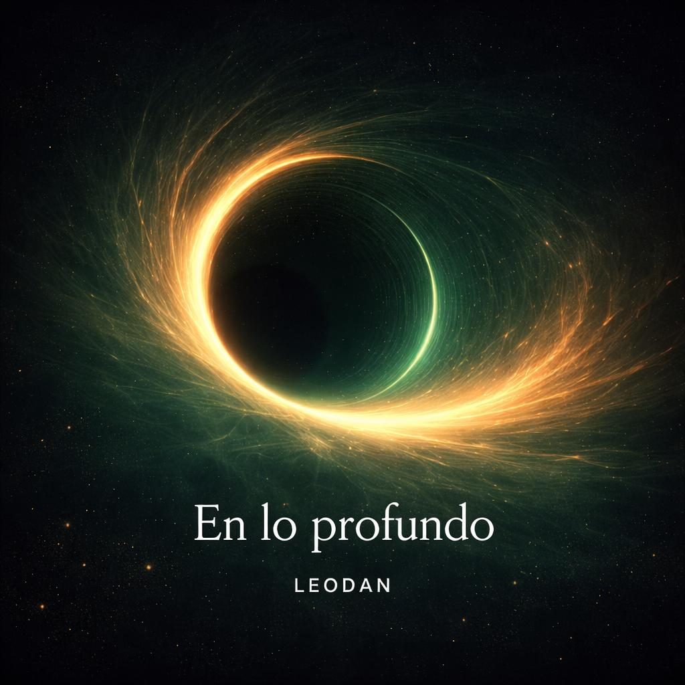

Qué inspiró el track
"En lo Profundo" nace desde una zona más interna: la noche, el pulso bajo la superficie y esa energía que no necesita mostrarse de inmediato para sentirse fuerte.

Próximo lanzamiento
Una entrada al punto donde la introspección se convierte en groove y la profundidad empieza a moverse. House y Tech House oscuro, elegante y energético.
Storytelling
Diseñado para la pista, construido desde el groove y atmósferas espaciales. “En lo Profundo” define la nueva etapa sonora de LEODAN: tensión, pulso constante y magnetismo nocturno.
"En lo Profundo" nace desde una zona más interna: la noche, el pulso bajo la superficie y esa energía que no necesita mostrarse de inmediato para sentirse fuerte.
El track marca una evolución para LEODAN: menos ruido, más intención. Una dirección más oscura y enfocada, preparada para sonar profesional sin perder identidad.
Conecta House y Tech House desde groove, tensión y energía de club. Mantiene la estética minimalista y espacial de LEODAN, pero la lleva a un lugar más profundo.
Campaña & Registro
Gestionamos nuestra campaña y captación de audiencia mediante el sistema profesional de Feature.fm.
Al realizar el Pre-save en Feature.fm una vez habilitado el enlace oficial, te unirás automáticamente a nuestra lista de distribución exclusiva. Esto te asegura acceso a previews en alta calidad, sets exclusivos de House y Tech House, y noticias de lanzamientos antes que nadie.
Contenido
Pieza visual oscura, verde y espacial para presentar el universo del lanzamiento.
Corte vertical para Instagram con el momento más directo del track y CTA al pre-save cuando esté disponible.
Espacio reservado para set, clip extendido o video relacionado con el lanzamiento.
Historia breve del proceso: intención, atmósfera, groove y cómo el track encaja en la identidad actual de LEODAN.
Comunidad & Streaming
Sigue los canales oficiales para escuchar avances en exclusiva, recibir notificaciones de los lanzamientos y conectar con la energía de pista de LEODAN.